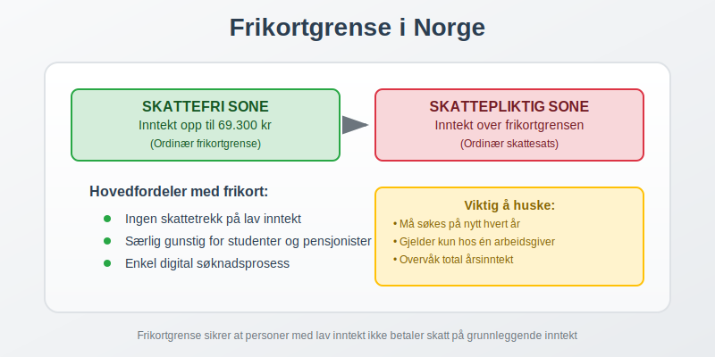
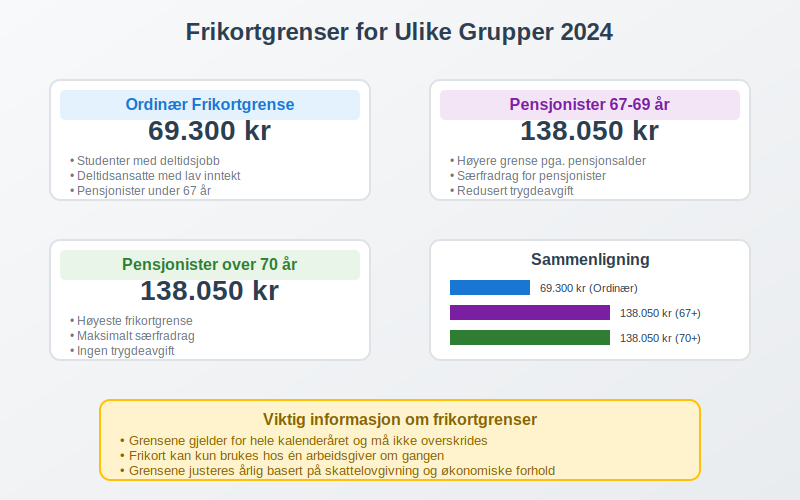
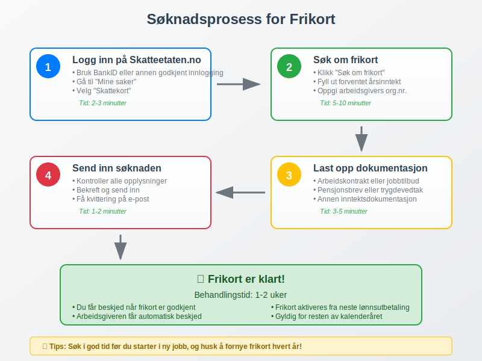
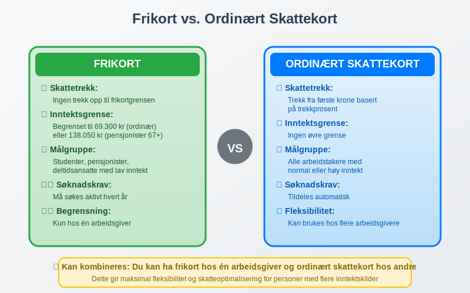
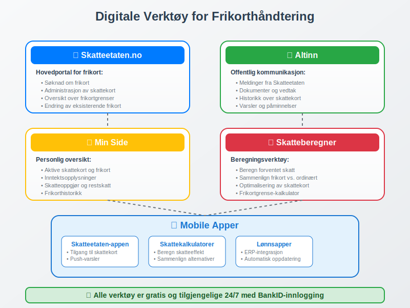

Frikortgrense er det maksimale beløpet du kan tjene skattefritt i Norge før du må betale skatt. Frikort er et viktig verktøy i det norske skattesystemet som sikrer at personer med lav inntekt ikke betaler skatt på sine første kroner. Dette er særlig relevant for arbeidstakere med deltidsjobber, studenter, pensjonister og andre med begrenset inntekt.

Hva er Frikort?
Frikort er et skattekort som gjør at du ikke betaler skatt på inntekt opp til en bestemt grense - frikortgrensen. Dette systemet er designet for å:
- Beskytte lavinntektsgrupper mot skatt på grunnleggende inntekt
- Forenkle skatteinnbetaling for personer med lav inntekt
- Sikre rettferdig beskatning basert på betalingsevne
- Redusere administrativt arbeid for både skattebetalere og Skatteetaten
Hvem Kan Få Frikort?
Frikort kan søkes av:
- Studenter med deltidsjobb eller feriejobb
- Pensjonister med lav pensjon
- Deltidsansatte med lav årsinntekt
- Sesongarbeidere med begrenset arbeidsperiode
- Personer med uføretrygd eller andre trygdeytelser
- Arbeidsledige som tar kortvarige jobber
Frikortgrenser for 2024
Frikortgrensene varierer avhengig av din situasjon og alder:

Standard Frikortgrenser
| Kategori | Frikortgrense 2024 | Beskrivelse |
|---|---|---|
| Ordinær frikortgrense | 69.300 kr | Standard grense for de fleste |
| Pensjonister under 67 år | 69.300 kr | Samme som ordinær grense |
| Pensjonister 67-69 år | 138.050 kr | Høyere grense pga. pensjonsalder |
| Pensjonister over 70 år | 138.050 kr | Høyeste frikortgrense |
| Studenter | 69.300 kr | Gjelder ved siden av studier |
Beregning av Frikortgrense
Frikortgrensen beregnes basert på:
- Personfradrag i inntektsskatten
- Minstefradrag i arbeidsinntekt
- Særfradrag for pensjonister
- Trygdeavgift og andre avgifter
Hvordan Søke om Frikort
Prosessen for å søke frikort er enkel og kan gjøres digitalt:

Søknadsprosess
-
Logg inn på Skatteetaten.no
- Bruk BankID eller annen godkjent innlogging
- Gå til “Mine saker” og velg “Skattekort”
-
Velg “Søk om frikort”
- Fyll ut nødvendig informasjon om forventet inntekt
- Oppgi arbeidsgivers organisasjonsnummer hvis aktuelt
-
Dokumenter forventet inntekt
- Arbeidskontrakt eller tilbud om jobb
- Pensjonsbrev eller trygdevedtak
- Annen dokumentasjon på inntektsgrunnlag
-
Send inn søknaden
- Søknaden behandles normalt innen 1-2 uker
- Du får beskjed når frikort er klart
Frister for Frikort
- Søknadsfrist: Ingen fast frist, men søk i god tid
- Gyldighetstid: Frikort gjelder for ett kalenderår
- Fornyelse: Må søkes på nytt hvert år
- Endringer: Kan endres underveis hvis inntekt endrer seg
Praktiske Eksempler
La oss se på hvordan frikortgrensen fungerer i praksis:
Eksempel 1: Student med Deltidsjobb
Situasjon:
- Student som jobber deltid ved siden av studier
- Forventet årsinntekt: 50.000 kr
- Frikortgrense: 69.300 kr
Resultat:
- Hele inntekten på 50.000 kr er skattefri
- Ingen forskuddstrekk trekkes fra lønnen
- Ingen skatt å betale ved skatteoppgjøret
Eksempel 2: Pensjonist over 70 år
Situasjon:
- Pensjonist, 72 år
- Årlig pensjon: 120.000 kr
- Frikortgrense: 138.050 kr
Resultat:
- Hele pensjonen på 120.000 kr er skattefri
- Ingen trekk i pensjonsutbetalingen
- Betydelig skattebesparelse sammenlignet med ordinær beskatning
Eksempel 3: Overskridelse av Frikortgrense
Situasjon:
- Deltidsansatt med frikort
- Frikortgrense: 69.300 kr
- Faktisk inntekt: 85.000 kr
Resultat:
- Skattefri inntekt: 69.300 kr
- Skattepliktig inntekt: 85.000 - 69.300 = 15.700 kr
- Skatt må betales på 15.700 kr ved skatteoppgjøret
Frikort vs. Ordinært Skattekort
Forskjellene mellom frikort og ordinært skattekort:

Sammenligningstabell
| Aspekt | Frikort | Ordinært Skattekort |
|---|---|---|
| Skattetrekk | Ingen trekk opp til grensen | Trekk fra første krone |
| Inntektsgrense | Begrenset til frikortgrense | Ingen øvre grense |
| Målgruppe | Lavinntektsgrupper | Alle arbeidstakere |
| Søknadskrav | Må søkes aktivt | Tildeles automatisk |
| Fleksibilitet | Kan kombineres med ordinært kort | Standard løsning |
Kombinasjon med Ordinært Skattekort
Det er mulig å ha både frikort og ordinært skattekort samtidig:
- Frikort hos en arbeidsgiver for inntekt opp til frikortgrensen
- Ordinært skattekort hos annen arbeidsgiver for tilleggsinntekt
- Automatisk overgang når frikortgrensen overskrides
Praktisk Håndtering
-
Prioriter arbeidsgivere
- Gi frikort til arbeidsgiver med lavest lønn
- Bruk ordinært kort for høyere lønninger
-
Overvåk inntektsutviklingen
- Hold oversikt over total årsinntekt
- Vurder å endre skattekort hvis nødvendig
-
Kommuniser med arbeidsgivere
- Informer om endringer i skattekort
- Sørg for korrekt lønnsbehandling
Konsekvenser ved Overskridelse
Hvis du tjener mer enn frikortgrensen, får det følgende konsekvenser:
Skattemessige Konsekvenser
- Etterskuddsskatt: Skatt på inntekt over grensen
- Rentekostnader: Renter på for lite betalt skatt
- Økt skattekort: Høyere trekk neste år for å unngå gjentakelse
Hvordan Håndtere Overskridelse
-
Varsle Skatteetaten
- Meld fra om endret inntekt så snart som mulig
- Be om nytt skattekort med riktig trekkprosent
-
Sett av penger til skatt
- Beregn omtrentlig skatt på merinntekt
- Sett av midler til skatteoppgjøret
-
Vurder forskuddsbetaling
- Betal inn ekstra skatt underveis
- Unngå store beløp ved skatteoppgjøret
Frikort og Arbeidsgiveravgift
For arbeidsgivere er det viktig å forstå sammenhengen mellom frikort og arbeidsgiveravgift:
Arbeidsgivers Ansvar
- Respektere frikort: Ikke trekke skatt opp til frikortgrensen
- Betale arbeidsgiveravgift: Avgift beregnes av hele lønnen
- Korrekt rapportering: Rapportere lønn og frikort til myndighetene
- Overvåke grenser: Varsle ansatt ved overskridelse
Regnskapsmessig Behandling
Frikort påvirker lønnsregnskapet på følgende måte:
Bruttolønn: 25.000 kr
Skattetrekk (frikort): 0 kr
Arbeidsgiveravgift: 3.570 kr (14,1% av bruttolønn)
Netto utbetaling: 25.000 kr
Digitale Verktøy og Ressurser
Moderne teknologi gjør det enklere å håndtere frikort:

Nyttige Digitale Tjenester
- Skatteetaten.no: Søknad og administrasjon av frikort
- Altinn: Kommunikasjon med offentlige myndigheter
- Min Side: Oversikt over skattekort og frikort
- Skatteberegner: Beregn forventet skatt og frikortgrense
Mobile Apper
- Skatteetaten-appen: Tilgang til skattekort på mobil
- Skattekalkulatorer: Beregn skatteeffekt av frikort
- Lønnsapper: Integrasjon med lønnssystemer
Fremtidige Endringer og Utvikling
Frikortordningen utvikler seg kontinuerlig:
Planlagte Endringer
- Digitalisering: Mer automatiserte prosesser
- Økte grenser: Årlige justeringer basert på lønnsutvikling
- Forenklet administrasjon: Mindre byråkrati for brukerne
- Bedre integrasjon: Kobling mellom ulike offentlige systemer
Langsiktige Mål
- Automatisk tildeling: Frikort basert på forventet inntekt
- Sanntidsoppdatering: Løpende justering av skattekort
- Personaliserte løsninger: Tilpasset individuelle behov
- Økt tilgjengelighet: Enklere for alle å benytte ordningen
Vanlige Spørsmål og Misforståelser
Ofte Stilte Spørsmål
Q: Kan jeg ha frikort hos flere arbeidsgivere samtidig? A: Nei, frikort kan bare brukes hos én arbeidsgiver om gangen. Total frikortgrense gjelder for all inntekt.
Q: Hva skjer hvis jeg glemmer å søke om frikort? A: Du kan søke når som helst i løpet av året, men får ikke tilbakebetalt skatt som allerede er trukket.
Q: Påvirker frikort andre ytelser som barnetrygd? A: Nei, frikort påvirker ikke andre offentlige ytelser eller støtteordninger.
Q: Kan jeg få frikort som selvstendig næringsdrivende? A: Nei, frikort gjelder kun for arbeidsinntekt og pensjoner, ikke næringsinntekt.
Vanlige Misforståelser
-
“Frikort betyr ingen skatt i det hele tatt”
- Feil: Gjelder kun opp til frikortgrensen
-
“Frikort fornyes automatisk”
- Feil: Må søkes på nytt hvert år
-
“Frikort kan deles mellom arbeidsgivere”
- Feil: Kan kun brukes hos én arbeidsgiver
Konklusjon
Frikortgrense er et viktig verktøy i det norske skattesystemet som sikrer at personer med lav inntekt ikke betaler skatt på sine første kroner. Ordningen er særlig verdifull for studenter, pensjonister, deltidsansatte og andre med begrenset inntekt.
Viktige Punkter å Huske
- Søk i tide: Frikort må søkes aktivt hvert år
- Overvåk inntekt: Hold oversikt over total årsinntekt
- Kommuniser endringer: Varsle Skatteetaten ved endret inntekt
- Kombiner smart: Bruk frikort strategisk sammen med ordinært skattekort
- Utnytt digitale verktøy: Bruk Skatteetaten.no og andre digitale tjenester
Frikortordningen gjør det enklere for personer med lav inntekt å delta i arbeidslivet uten å bekymre seg for skattetrekk på grunnleggende inntekt. Ved å forstå reglene og bruke ordningen riktig, kan du optimalisere din økonomiske situasjon og sikre korrekt skattebehandling.